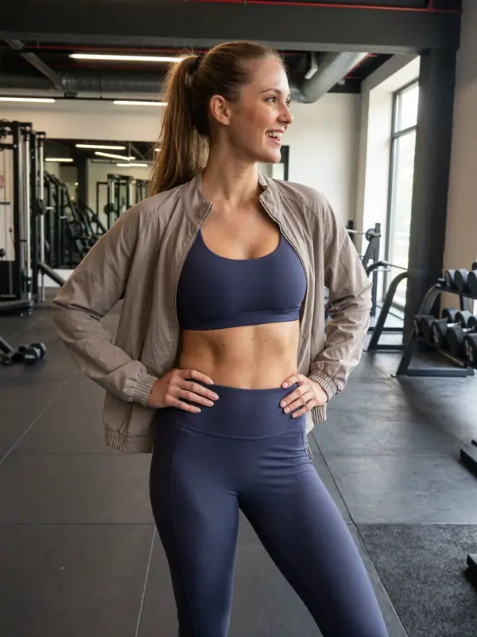

How it works
Three habits. Everything else is out of the way.
LegDay is built for people who already know what to do and stop doing it by week three. The app has one job: get you back tomorrow.
01
Log it in one sentence
Type or say what you did — "bench 3×8 60kg, 10 min bike". The app reads the exercise, the sets and the load out of the line and files them. No forms, no dropdowns, no picking a workout from a list before you are allowed to start.
Average log takes under ten seconds.
02
Keep the chain
Every logged day extends one streak. It sits at the top of the home screen and nothing competes with it. Rest days are part of training, so each month gives you one freeze: use it and the chain holds while you take the day off.
Badges at 7, 21 and 100 days.
03
Two or three people see you
A crew is capped small on purpose. They see that you showed up and how long your chain is, and they can send one tap back. There is no public feed, no follower count and nothing to perform for.
Weekly leaderboard resets every Monday.
And underneath it
Progress
A four-week consistency map, weekly volume and your personal bests. Read in one screen, not a dashboard to study.
Library
Short sessions filtered by time and kit. Tap one and it prefills the log — 18 to 35 minutes, no equipment required.
Coach check-in
One message a week reading your last seven days, with three replies. It adjusts the plan and then leaves you alone.

“Week three is where people quit. The chain gives you something to protect before motivation runs out.”
Anika Vester · ambassador
Coach, 11 years · 214-day streak